Prof. Dr. Gerit Wagner
(2026-05-04)
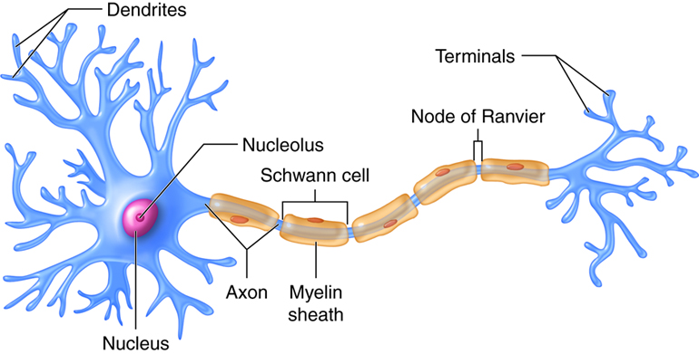
Key milestones
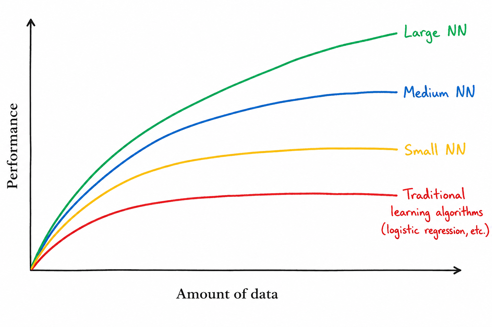
Key drivers of recent progress in neural networks
Availability of large-scale datasets
Increasing computational power (especially GPUs/TPUs)
Advances in algorithms and neural network architectures
Specialization of neural networks:
A perceptron is one of the earliest forms of neural networks. A classical perceptron is characterized by:
\[z = w^T x + b\]
followed by a threshold activation:
\[\hat{y} = \begin{cases} 1 & \text{if } w^T x + b > 0 \\ 0 & \text{otherwise} \end{cases}\]
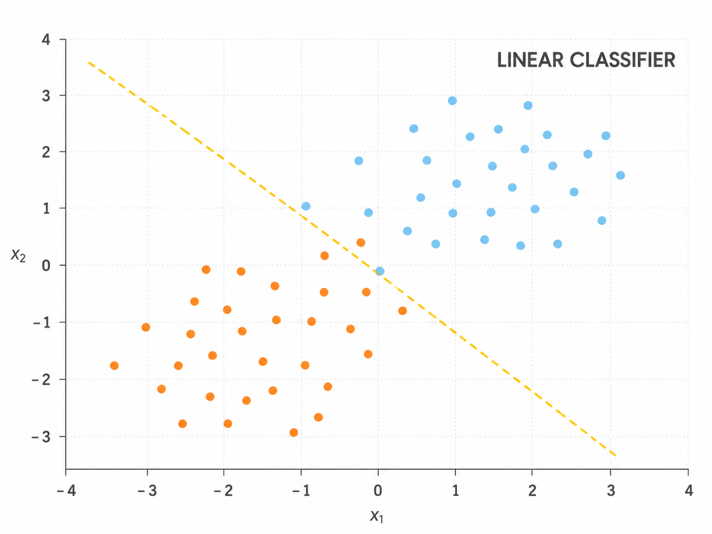
Limitation of a single perceptron: It cannot build abstract intermediate representations and can only learn linear decision boundaries.
Solution: Multilayer neural networks combine:
Layers:
Note: the number of layers and neurons is specified ex-ante and does not change in the training process.
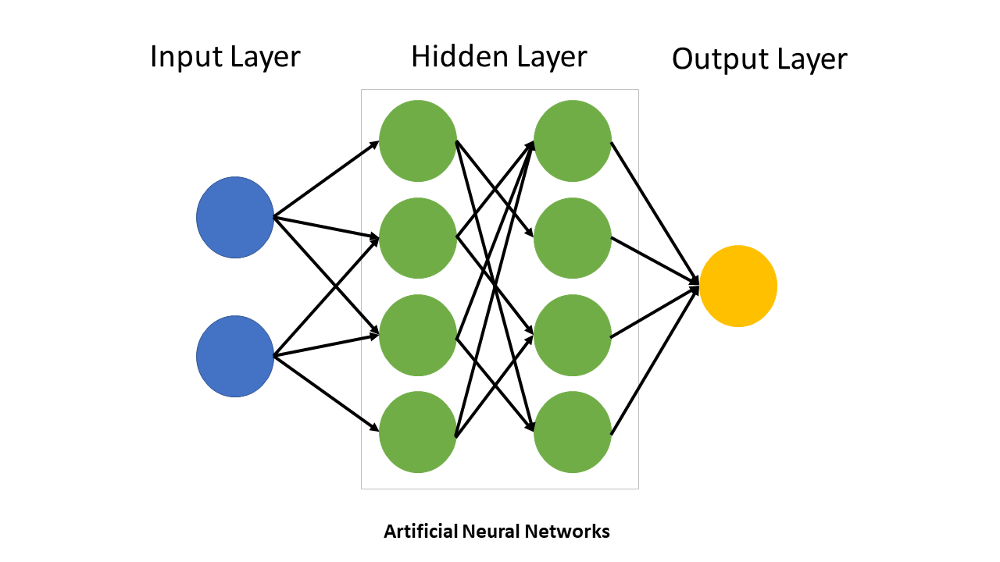
🎥 Grant Anderson (3Blue1Brown) provides a series of instructive
animated explanations, including one on Neural Networks.
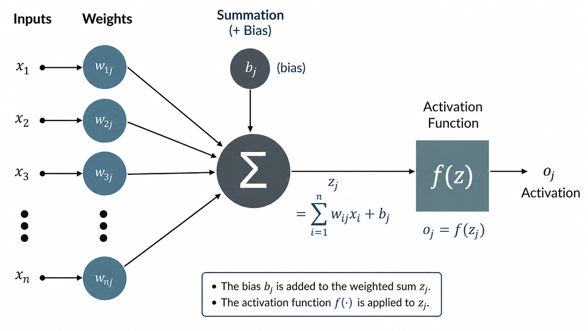
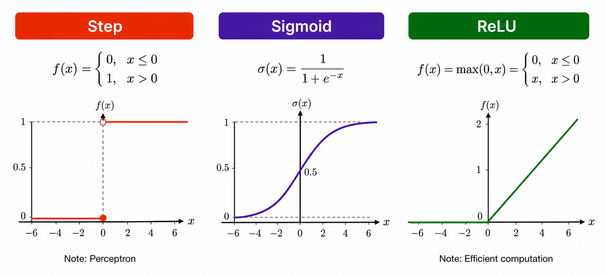
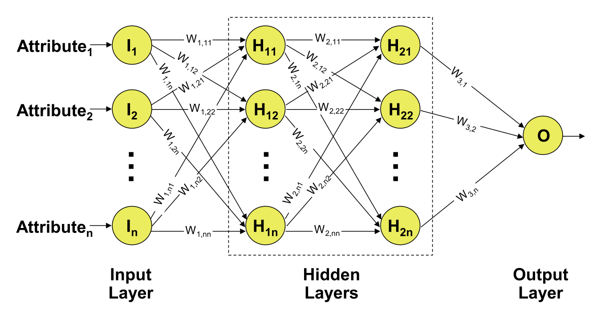
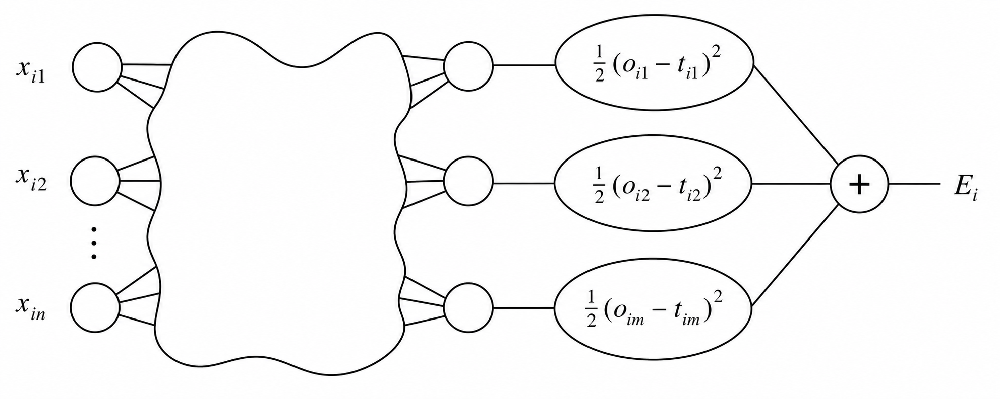
The network’s prediction error is measured with a loss function.
For one training example \(i\):
\[E_i = \frac{1}{2} \sum_{j=1}^{m} (o_{ij} - t_{ij})^2\]
This is the squared error loss across all output neurons \(j\).
Across all \(h\) training examples, the total loss is:
\[E = \sum_{i=1}^{h} E_i\]
Backpropagation adjusts the weights to reduce this total loss.
Backpropagation calculates the gradients of the loss function with respect to the network’s weights. These gradients are then used by an optimizer, to iteratively update the weights and reduce the difference between predicted and true outputs.
initialize weights and biases
repeat until stopping criterion is met:
total_error = 0
for each training example:
pass input forward through all layers
compare predicted output with target value
add error to total_error
propagate error backward through all layers
update weights and biases
check whether total_error is small enoughThe loss function \(E\) has to be minimized. Because it depends on the output neurons \(o_j\), it automatically depends on their weights to the precedent layer(s):
\[o_j=f(s(x)_j) \text{ with } s(x)_j =\sum_k^n w_{jk}\cdot x_k\]
Thus, the weights have to be found where \(E\) is minimal.
Examples of the loss function with two weights (simplified):
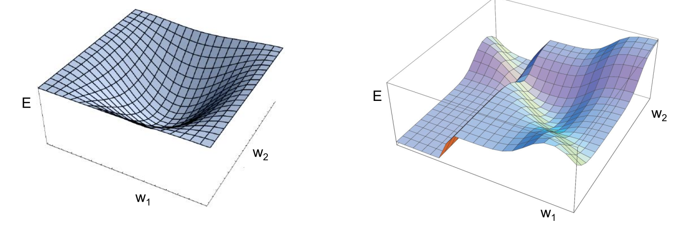
To minimize the loss function \(E\) the backpropagation algorithm uses the method of gradient descent. This method searches those weights, where the vector containing the partial first derivatives of the loss function \(\nabla E\) (gradient) is equal to the zero vector (minimum):
\[ \nabla E = \left( \frac{\partial E}{\partial w_1}, \frac{\partial E}{\partial w_2}, \ldots, \frac{\partial E}{\partial w_m} \right) \]
To adjust the weight \(w_{ij}\), which connects neuron \(i\) to neuron \(j\), gradient descent updates the weight in the negative gradient direction:
\[ \Delta w_{ij} = -a \cdot \frac{\partial E}{\partial w_{ij}} \]
\[ \Delta w_{ij} = -a \cdot \sum_{j=1}^{m} (o_{ij} - t_{ij}) \cdot (-x_i) = a \cdot \sum_{j=1}^{m} (o_{ij} - t_{ij}) \cdot x_i \]
where \(a\) represents the predefined learning rate. The adjusted weight is then computed as:
\[ w_{ij}^{\text{new}} = w_{ij}^{\text{old}} + \Delta w_{ij} \]
Because neural networks have many parameters, each update changes the model in many dimensions at once. The learning rate therefore has to be chosen carefully: large steps can destabilize training, while very small steps can make learning inefficient.
Basic neural networks are often introduced as fully connected feed-forward networks. Specialized architectures go beyond this and differ in the following design choices:
| Design choice | How architectures differ |
|---|---|
| Input structure assumed | Different architectures are built for different data structures, such as tabular data (MLPs), spatial data and images (CNNs), sequence data (RNNs or Transformers), relational data (graph neural networks), or ; generative tasks (GANs). |
| Neuron / unit type | The basic unit may be a dense neuron, recurrent cell, gated LSTM/GRU cell, attention head, or a generator/discriminator module. |
| Layer operation | Layers may perform matrix multiplication, convolution with moving filters, recurrent state updates, self-attention, or adversarial generator/discriminator training. |
| Connectivity pattern | Information may flow through all-to-all dense connections, local sliding windows, temporal loops with hidden states, or token-to-token attention. |
Focus in this section: We use CNNs, RNNs, and Transformers as key examples because they show three central architectural ideas:
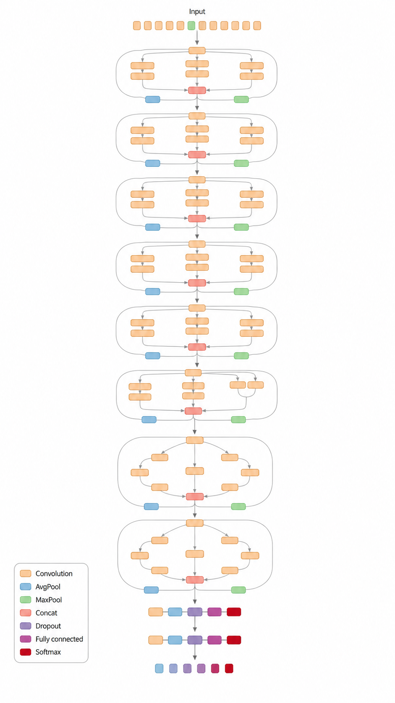
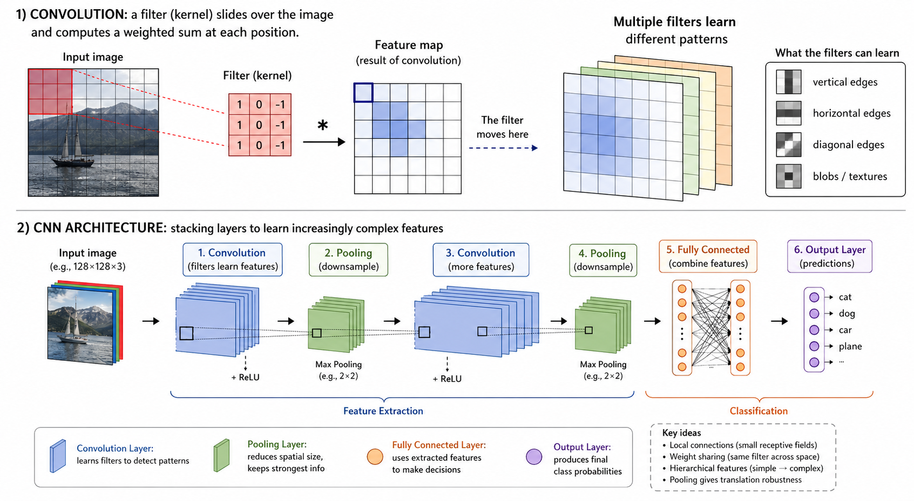
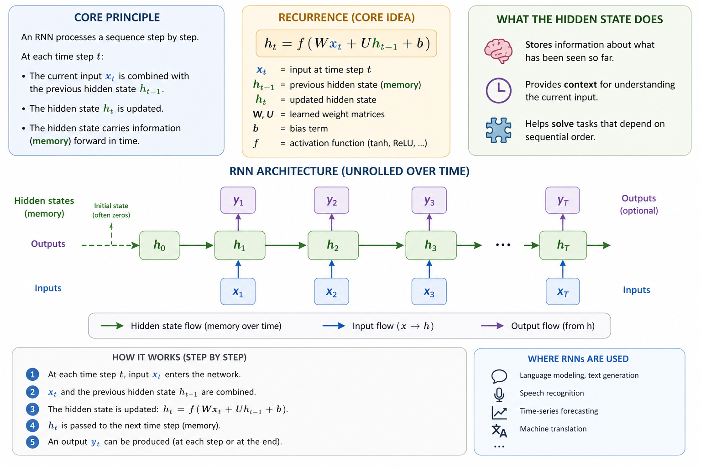
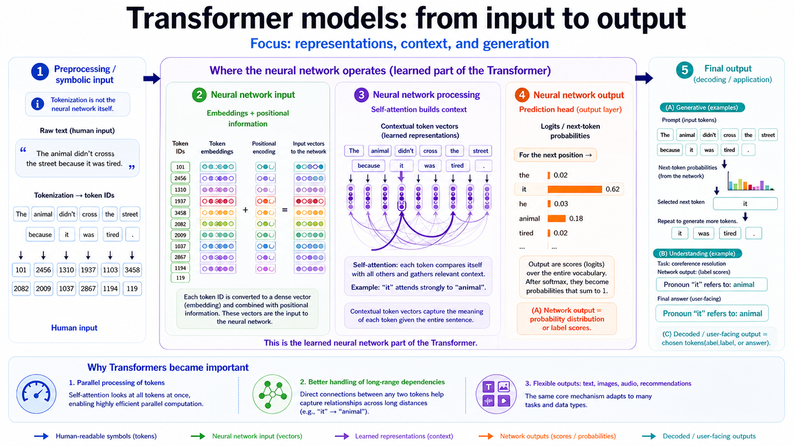
Then tune the parts that require experimentation.
Architecture family
| Data structure | Typical model | Inductive bias |
|---|---|---|
| 📊 Tabular data | MLP | fully connected |
| 📷 Images | CNN | local / spatial |
| 🎧 Audio | CNN / RNN / Transformer | local, sequential, attention |
| ⏱️ Time series | RNN / Transformer | temporal order |
| 📝 Text / language | Transformer | global attention |
Output layer and loss function
| Prediction task | Output layer | Output activation | Loss function |
|---|---|---|---|
| Regression | 1 neuron | Linear | MSE |
| Binary classification | 1 neuron | Sigmoid | Binary cross-entropy |
| Multi-class classification | One neuron per class | Softmax | Categorical cross-entropy |
Rule of thumb: data structure determines the architecture; prediction task determines the output layer and loss.
Besides the selection of the model type, output layer, and loss function (see previous slide), these choices are usually standardized:
These choices require more experimentation to tune complexity and parameters:
Depth
number of layers
Width
neurons per layer
Typical starts:
32, 64, 128, 256
\[ w := w - \eta \nabla_w J \]
Typical range:
\(10^{-3}\) to \(10^{-4}\)
Traditional machine learning often relies strongly on manual feature engineering: humans design useful input variables before training the model. Neural networks can reduce this need because hidden layers learn intermediate representations from data. However, feature engineering does not disappear. We still need to decide:
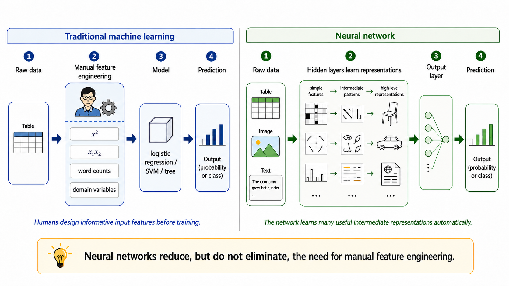
The sklearn library provides basic feedforward networks, including MLPClassifier and MLPRegressor. It does not offer CNNs, RNNs, or other advanced neural networks.
from sklearn.neural_network import MLPClassifier
from sklearn.datasets import make_classification
from sklearn.model_selection import train_test_split
X_train, X_test, y_train, y_test = train_test_split(X, y)
model = MLPClassifier(
hidden_layer_sizes=(32, 16), # architecture (depth + width)
activation="relu", # hidden activation
solver="adam", # optimizer
learning_rate_init=0.001, # learning rate
alpha=0.0001, # L2 regularization (weight decay)
max_iter=200
)
model.fit(X_train, y_train)For advanced neural networks and production environments, pytorch and tensorflow are suitable libraries.
import torch
X = torch.randn(100, 10)
y = torch.sum(X, dim=1, keepdim=True) # simple target
# TODO: specify MLP
model = MLP(
input_dim=10,
hidden_layers=[32, 16], # try: [8], [64, 64], [128, 64, 32]
output_dim=1 # regression
)
# Training setup
criterion = nn.MSELoss() # regression
learning_rate = 1e-3 # try: 1e-1, 1e-4
optimizer = torch.optim.Adam(model.parameters(), lr=learning_rate)
# Training loop
for epoch in range(100):
predictions = model(X) # Forward pass
loss = criterion(predictions, y)
# Backpropagation
optimizer.zero_grad()
loss.backward()
optimizer.step()
print(f"Epoch {epoch}, Loss: {loss.item():.4f}")import torch.nn as nn
# Specify MLP
class MLP(nn.Module):
def __init__(self, input_dim, hidden_layers, output_dim):
super().__init__()
layers = []
prev_dim = input_dim
# Depth and width
for h in hidden_layers:
layers.append(nn.Linear(prev_dim, h))
layers.append(nn.ReLU())
prev_dim = h
layers.append(nn.Linear(prev_dim, output_dim))
self.model = nn.Sequential(*layers)
def forward(self, x):
return self.model(x)
# ...
model = MLP(
input_dim=10,
hidden_layers=[32, 16],
output_dim=1
)Neural networks transform inputs into outputs through weighted connections, biases, and activation functions.
A single perceptron can only learn linear decision boundaries; multilayer networks with nonlinear activations can model more complex patterns.
Training consists of a forward pass, loss calculation, backpropagation, and parameter updates via an optimizer such as gradient descent or Adam.
Different neural network architectures encode different assumptions about data:
MLPs for tabular data, CNNs for spatial data, RNNs for sequences, and Transformers for attention-based language tasks.
Designing neural networks means choosing the architecture, output layer, loss function, learning rate, optimizer, and regularization strategy, then iteratively evaluating and adjusting these choices.